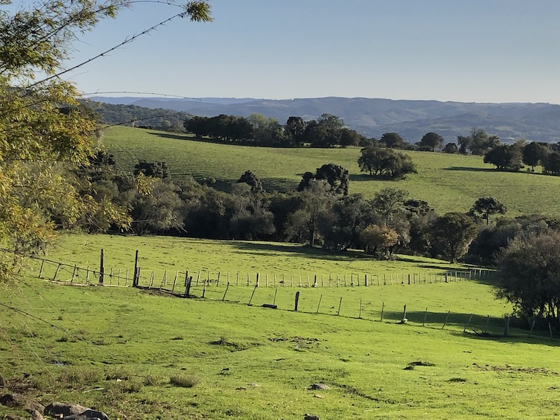

Página 02
A sua vida tem muito valor diante de DEUS.
DEUS tem um infinito amor por você.
As vezes pensamos que DEUS nos esqueceu, mas de certa forma DEUS nunca desanpara os seus filhos queridos, somos a imagem e semelhança do senhor JESUS, por mais que as coisas esteja dificil pra você lembresse DEUS não dá o fardo que você não possa carregar.
Seja mais grato a DEUS.
A grtidão é algo que agrda muito a DEUS
seja mais grato a DEUS e veja quão grande sera a diferênça na sua vida, não estou falando finaceiramente não. Ser próspero não e apenas ter dinheiro, ser prospero é ter saúde, paz, alegria no coração, amor, felicidade... que a grça do senhor JESUS seja com você, Amém.
DISCUSSÃO AQUI NO TREM:
-Presidente vargas é so o nome da rua, não teve presidente com esse nome
-Teve sim, presidente vargas
-e qual o primeiro nome dele?
-sei lá é vargas algum acoisa procura no google
-aqui o getulio vargas só pode ser ess
não pô esse é o hospital.
Juze chapado
As vezes eu me olho no espelho e digo para min mesmo "pare de beber felipe "
e eu continuo bebendo porquer meu nome não é felipe